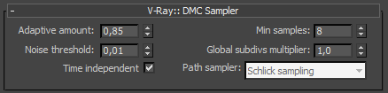
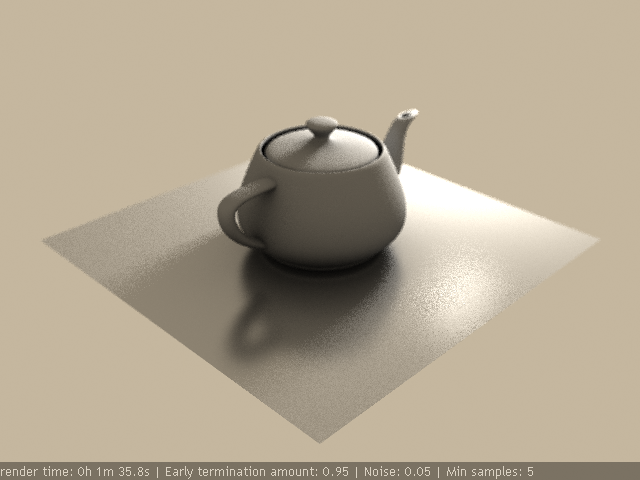
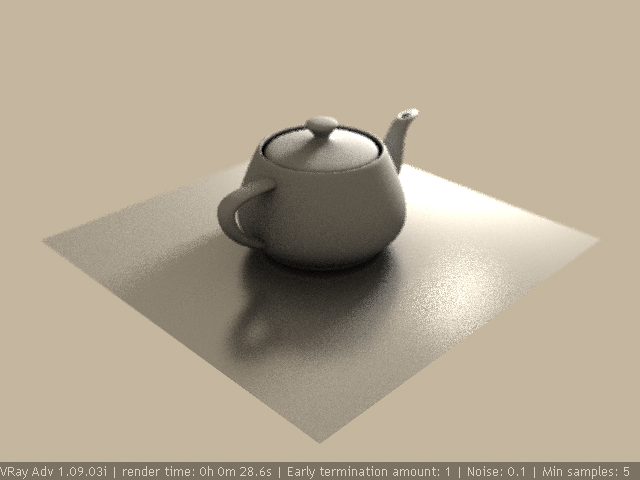

DMC Sampler
DMC Sampler Overview
Monte Carlo (MC) sampling is a method for evaluating "blurry" values (anitaliasing, depth of field, indirect illumination, area lights, glossy reflections/refractions, translucency, motion blur, etc). V-Ray uses a variant of Monte Carlo sampling called "Deterministic Monte Carlo" (DMC). The difference between pure Monte Carlo sampling and Deterministic Monte Carlo is that the first uses pseudo-random numbers which are different for each and every evaluation (and so re-rendering a single image will always produce slightly different results in the noise), while Deterministic Monte Carlo uses a pre-defined set of samples (possibly optimized to reduce the noise), which allows re-rendering an image to always produce the exact same result. By default, the Deterministic Monte Carlo method used by V-Ray is a modification of Schlick sampling, introduced by Christophe Schlick in [ 1 ] (see the References section below for more information).
Note that there exists a sub-set of DMC sampling called Quasi Monte Carlo (QMC) sampling, in which the samples are obtained from sequences of numbers, called low-discrepancy sequences, which have special numeric properties. V-Ray, however, does not use this technique.
Instead of having separate sampling methods for each of the blurry values, V-Ray has a single unified framework that determines how many and which exact samples are to be taken for a particular value, depending on the context in which that value is required. This framework is called the "DMC sampler".
The actual number of samples for any blurry value is determined based on three factors:
-
The subdivs value supplied by the user for a particular blurry effect. This is multiplied by the Global subdivs multiplier (see below).
-
The importance of the value (for example, dark glossy reflections can do with fewer samples than bright ones, since the effect of the reflection on the final result is smaller; distant area lights require fewer samples than closer ones, etc). Basing the number of samples allocated for a value on importance is called importance sampling.
-
The variance (think "noise") of the samples taken for a particular value - if the samples are not very different from each other, then the value can do with fewer samples; if the samples are very different, then a larger number of them will be necessary to get a good result. This basically works by looking at the samples as they are computed one by one and deciding, after each new sample, if more samples are required. This technique is called early termination or adaptive sampling.
For more information on the relationship and effects of these parameters, please refer to the tutorials section.
DMC Sampler Parameters
 Amount - controls the extent to which the number of samples depends on the importance of a blurry value. It also controls the minimum number of samples that will be taken. A value of 1.0 means full adaptation; a value of 0.0 means no adaptation.
Min samples - determines the minimum number of samples that must be made before the early termination algorithm is used. Higher values will slow things down but will make the early termination algorithm more reliable.
Noise threshold - controls V-Ray's judgement of when a blurry value is "good enough" to be used. This directly translates to noise in the result. Smaller values mean less noise, more samples, and higher quality. A value of 0.0 means that no adaptation will be performed.
Global subdivs multiplier - this will multiply all subdiv values during rendering; you can use this to quickly increase/decrease sampling quality everywhere. This affects everything, except for the light cache, photon map, caustics and aa subdivs. Everything else (dof, moblur, irradiance map, brute-force GI, area lights, area shadows, glossy reflections/refractions) is affected by this parameter.
Time independent - when this option is On, the sampling pattern will be the same from frame to frame in an animation. Since this may be undesirable in some cases, you can turn this option Off to make the sampling pattern change with time. Note that re-rendering the same frame will produce the same result in both cases.
Path sampler - specifies what algorithm to use to generate sample values. V-Ray uses a modification of Schlick sampling (see the References section below for more details).
Example: Noise vs Speed
You can use the DMC sampler as global quality control, for example:
For lower quality:
-
increase the Amount
-
increase Noise
-
reduce Min samples
For higher quality:
-
decrease the Amount
-
decrease Noise
-
increase Min samples
These controls have effect on everything: DOF, GI, glossy stuff, area lights etc.
Color mapping mode also affects render times and sampling quality, since V-Ray tries to distribute samples based on the final image result.
The images below have the same subdivs for DOF (10 subdivs), GI (50 subdivs, Direct method), glossy reflection (50 subdivs, no interpolation), area light (10 subdivs) for all images. Notice how changes in the DMC sampler parameters affect the image quality and render time (click the images to enlarge them):
|
|
Adaptive amount |
Noise threshold |
Min samples |
Render time |
|
|
0.85 |
0.005 |
15 |
8m 43.7s |
|
|
0.95 |
0.01 |
5 |
4m 34.5s |
|
 |
0.95 |
0.05 |
5 |
1m 35.8s |
|
|
0.99 |
0.05 |
5 |
0m 49.0s |
|
 |
1 |
0.1 |
5 |
0m 28.6s |
References
More information on deterministic Monte Carlo sampling for computer graphics can be found from the sources listed below.
-
[1] C. Schlick, An Adaptive Sampling Technique for Multidimensional Integration by Ray Tracing, in Second Eurographics Workshop on Rendering (Spain), 1991, pp. 48-56
Describes deterministic MC sampling for antialiasing, motion blur, depth of field, area light sampling and glossy reflections. -
[2] K. Chiu, P. Shirley and C. Wang, Multi-Jittered Sampling, in Graphics Gems IV, 1994
Describes a combination of jittered and N-rooks sampling for the purposes of computer graphics.
-
[3] Masaki Aono and Ryutarou Ohbuchi, Quasi-Monte Carlo Rendering with Adaptive Sampling, IBM Tokyo Research Laboratory Technical Report RT0167, November 25, 1996, pp.1-5
An online version can be found at
http://www.kki.yamanashi.ac.jp/~ohbuchi/online_pubs/eg96_html/eg96.htm
Describes an application of low discrepancy sequences to area light sampling and the global illumination problem.
-
[4] M. Fajardo, Monte Carlo Raytracing in Action, in State of the Art in Monte Carlo Ray Tracing for Realistic Image Synthesis, SIGGRAPH 2001 Course 21, pp. 151-162;
An online version can be found at
http://www.cs.virginia.edu/~gfx/Courses/2003/ImageSynthesis/papers/Monte Carlo/Monte Carlo SIGGRAPH Course.pdf
Describes the ARNOLD renderer employing randomized quasi-Monte Carlo sampling using low discrepancy sequences for pixel sampling, global illumination, area light sampling, motion blur, depth of field, etc.
-
[5] E. Veach, December, Robust Monte Carlo Methods for Light Transport Simulation, Ph. D. dissertation for Stanford University, 1997, pp. 58-65
An online version can be found at http://graphics.stanford.edu/papers/veach_thesis/
Includes a description of low discrepancy sequences, quasi-Monte Carlo sampling and its application to solving the global illumination problem.
-
[6] L. Szirmay-Kalos, Importance Driven Quasi-Monte Carlo Walk Solution of the Rendering Equation, Winter School of Computer Graphics Conf., 1998
An online version can be found at http://www.fsz.bme.hu/~szirmay/imp1_link.html
Describes a two-pass method for solving the global illumination problem employing quasi-Monte Carlo sampling, as well as importance sampling using low discrepancy sequences.